Vendas e assistência técnica

Especialista DJI AgricultureDrones agrícolas DJI com venda, peças e assistência técnica. Atendimento de quem entende do campo, em Rondônia e Mato Grosso.
Linha Agras
// 04Drones de pulverização DJI Agriculture,
do compacto T25P ao gigante T100.
Assistência técnica
// SATManutenção especializada em DJI Agras
para o seu drone não parar na safra.
- Diagnóstico e reparo Avaliação completa e conserto de motores, braços, bombas e eletrônica.
- Revisão preventiva Limpeza, inspeção e checklist antes e depois da safra.
- Baterias e carregadores Teste, avaliação e manutenção de baterias e estações de carga.
- Peças e acessórios Hélices, bicos, bombas e acessórios para toda a linha Agras.
- Calibração e firmware Calibração de sensores e do sistema de pulverização, com firmware em dia.
- Suporte ao operador Ajuda para configurar o drone e tirar dúvidas de operação.
Abra um chamado no polo mais perto de você:
Onde estamos
Abrir no Maps ↗AGRAS PRO · Porto Velho, RO
© 2026 AGRAS PRO Drones Agrícolas. Todos os direitos reservados.